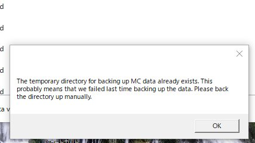
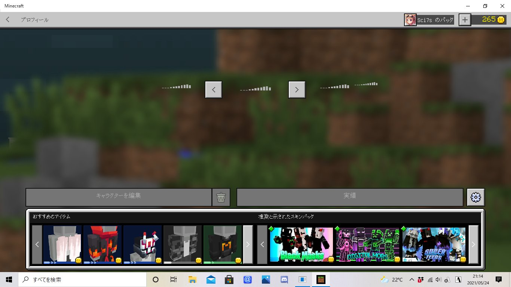

<meta charset="utf-8">
<title>エラーの対処方法</title>
<body bgcolor="#f0f8ff" text="文字色と位置ずらす" style="padding-left: 40px;"></body>
<link rel="stylesheet" href="1.css">

<h1 style="text-align: center; color: rgba(107, 24, 175, 0.575);">エラーが出た場合の対処方法</h1><hr>

<br><div class="aw">
    <a href="#1"><h3>[ Launch ] で起動出来ない場合</h3></a>
    <a href="#2"><h3>スキン無限ロードで適応出来ない場合</h3></a>
    <a href="#3"><h3>スキンが透明化､不具合がある場合</h3></a>
</div>

<br><br><p id="1" style="color: cadetblue; font-size:150%; border-left: 5px solid #e2001b;">[ Launch ] で起動出来ない</p>
<p>エラー内容によって処理が変わる為､100%それで直ると言う保証はありません｡思いつく限り上げてみます</p>

<div class="box1">
<br><div class="narabi">このエラーの場合､マイクラをWindows10からアンインストールしてから [ Launch ] すれば通ると思われます</div>
</div>


<br><br><br><p id="2" style="color: cadetblue; font-size:150%; border-left: 5px solid #e2001b;">スキン無限ロードで適応出来ない場合</p>

<div class="box1">
<br><div class="narabi">こうなった時は､ワールドやサーバーに入り､Emote 変更からスキンを変更すれば回避出来ます<br>エモートは B キーで表示出来ます</div>
</div>